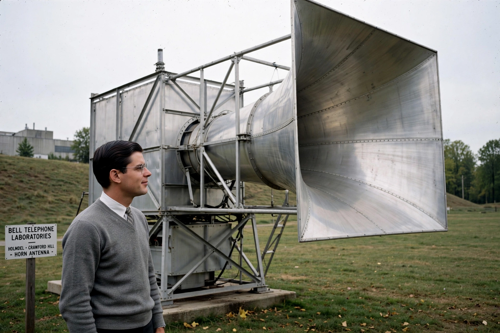

| Born | January 10, 1936, Houston, Texas, U.S. |
|---|---|
| Alma mater | Rice University, Caltech (PhD) |
| Known for | Discovery of cosmic microwave background |
| Awards | Nobel Prize in Physics (1978) |
Robert Woodrow Wilson (born January 10, 1936) is an American astronomer and physicist who, along with Arno Allan Penzias, discovered the cosmic microwave background radiation in 1964, providing key evidence for the Big Bang theory. They shared the 1978 Nobel Prize in Physics.
Wilson was born in Houston, studied physics at Rice University, and earned his PhD at Caltech, working on radio astronomy surveys.
At Bell Laboratories in Holmdel, New Jersey, Wilson and Penzias used the Holmdel Horn Antenna and found a persistent excess noise of about 3.5 K that they could not explain — even after removing pigeon droppings ("white dielectric material") from the antenna. Princeton theorists led by Robert Dicke identified it as the predicted relic radiation from the early universe.
Wilson continued at Bell Labs, working on millimeter-wave astronomy and interstellar molecules, and later became a senior scientist at the Harvard–Smithsonian Center for Astrophysics. See also Rudolf Peierls.